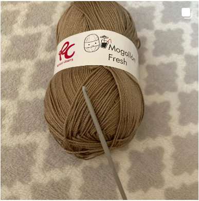

HILOS...
Nos adentraremos en el mundo de la costuras y sus diferentes estilos.
En esta página web podrás encontrar información acerca de todo lo relacionado con el mundo de la costura, podrás navegar a través de sus diferentes secciones e informarte de las noticias mas recientes del mundillo, novedades, explicaciones de las diferentes técnicas y mucho mas, adelante...